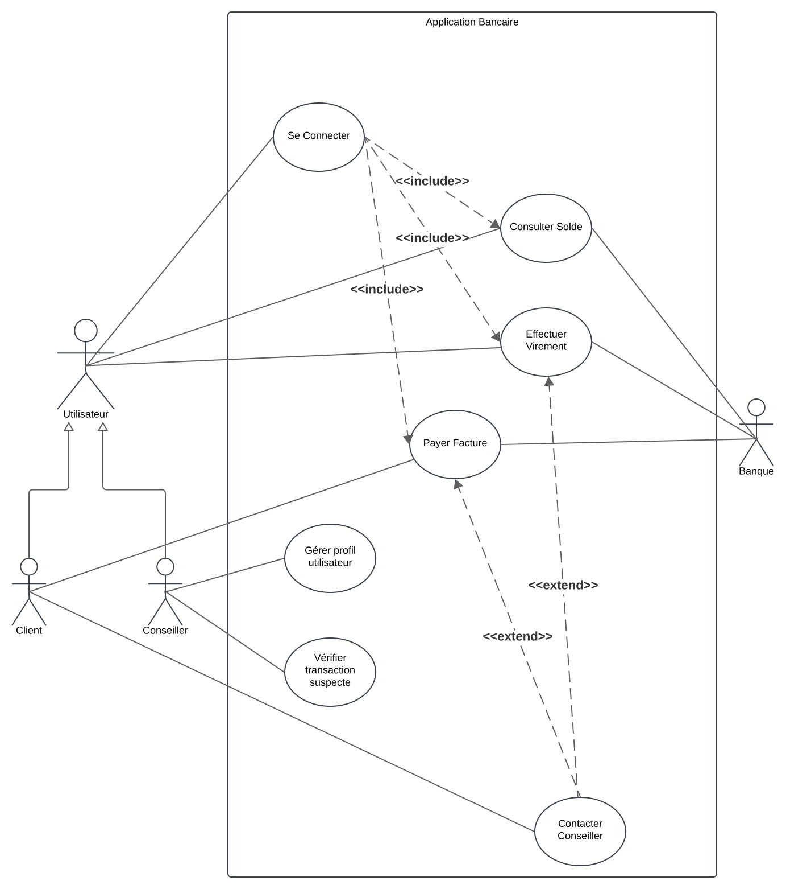

Diagrammes de cas d'utilisation
Objectif
Les diagrammes de cas d'utilisation sont des outils en UML qui permettent de modéliser les interactions entre un système et ses acteurs. Ils servent à capturer les exigences fonctionnelles d'un système et offrent une vue d'ensemble des fonctionnalités principales, favorisant une communication claire entre les parties prenantes.
Cas principaux d’utilisation
-
Visualisation des interactions système-utilisateur :
- Identifier les rôles des acteurs et les fonctionnalités auxquelles ils accèdent.
- Représenter graphiquement les actions clés offertes par le système.
-
Capturer les exigences fonctionnelles :
- Décrire les fonctionnalités du système de manière structurée.
- Fournir un cadre pour explorer les besoins des utilisateurs et des parties prenantes.
-
Faciliter la communication :
- Offrir un support visuel pour que toutes les parties prenantes (clients, développeurs, utilisateurs) partagent une compréhension commune.
-
Base pour la conception et les tests :
- Servir de point de départ pour élaborer des scénarios de test et des diagrammes plus détaillés (diagrammes de séquence, diagrammes d'activités).
Composants principaux
1. Système
- Définition :
Le système est l'entité étudiée ou développée. Il est représenté par un rectangle qui englobe les cas d'utilisation. - Rôle :
Il délimite le périmètre fonctionnel et clarifie ce qui est inclus dans l’analyse.
2. Acteurs
- Définition :
Un acteur est une entité externe qui interagit avec le système pour atteindre un objectif. Il peut être un utilisateur humain, un autre système ou un dispositif. - Classification :
- Acteur primaire : Initie les interactions avec le système pour accomplir une tâche spécifique.
- Acteur secondaire : Fournit un soutien ou des services au système en réponse à des requêtes.
3. Cas d’utilisation
- Définition :
Un cas d’utilisation décrit une action ou une séquence d'actions que le système effectue pour produire un résultat observable et de valeur pour un acteur. - Caractéristiques d’un bon cas d’utilisation :
- Clair et compréhensible.
- Focalisé sur un objectif précis.
4. Relations entre composants
- Association :
Représente une interaction directe entre un acteur et un cas d’utilisation. - Inclure (Include) :
Indique qu’un cas d’utilisation intègre systématiquement le comportement d’un autre cas d’utilisation. - Étendre (Extend) :
Décrit une variation optionnelle ou conditionnelle d’un cas d’utilisation. - Généralisation :
Représente une relation hiérarchique entre des cas d'utilisation ou entre des acteurs.
Structure et présentation d’un diagramme de cas d’utilisation
-
Délimitation du système :
- Représenter le système à l’aide d’un rectangle nommé.
-
Identification des acteurs :
- Ajouter les acteurs autour du système sous forme de stickmen
- Les acteurs primaires sont ajoutés à gauche du système
- Les acteurs secondaires sont ajoutés à droite du système
-
Définition des cas d’utilisation :
- Ajouter les cas d’utilisation sous forme d’ellipses à l’intérieur du rectangle du système.
-
Établissement des relations :
- Relier les acteurs aux cas d’utilisation avec des lignes simples (association).
- Définir les relations spécifiques comme
<<include>>,<<extend>>, ou des relations de généralisation si nécessaire.
Résumé
Les diagrammes de cas d'utilisation sont une méthode essentielle pour modéliser les interactions entre un système et ses utilisateurs. Ils permettent de capturer les exigences fonctionnelles de manière claire et concise, et constituent une base solide pour d'autres étapes de conception et de développement.
Exemple Concret : Gestion d'une Application Bancaire
Description du contexte :
Une application bancaire permet aux clients de gérer leurs comptes, effectuer des transactions, consulter leurs soldes, et interagir avec des conseillers. Les utilisateurs principaux sont les clients de la banque et les administrateurs du système.
Acteurs principaux :
- Client : Utilisateur principal qui accède à l'application pour gérer ses comptes.
- Administrateur du système : Responsable de la maintenance et de la gestion des données de l'application.
- Banque : Système externe intégré (exemple : passerelle pour les paiements en ligne).
Cas d'utilisation principaux :
- Se connecter : Permet au client d'accéder à l'application après authentification.
- Consulter le solde : Le client peut vérifier le solde de ses comptes.
- Effectuer un virement : Permet de transférer de l'argent entre deux comptes.
- Payer une facture : Option pour régler des factures directement via l'application.
- Contacter un conseiller : Le client peut échanger avec un conseiller par chat ou message.
- Gérer les profils utilisateurs : L'administrateur peut ajouter ou supprimer des comptes clients.
- Vérifier les transactions suspectes : L'administrateur analyse les activités inhabituelles.
Relations entre acteurs et cas d'utilisation :
- Client :
- Est associé aux cas d'utilisation suivants :
- Se connecter
- Consulter le solde
- Effectuer un virement
- Payer une facture
- Contacter un conseiller
- Est associé aux cas d'utilisation suivants :
- Administrateur du système :
- Est associé aux cas d'utilisation suivants :
- Gérer les profils utilisateurs
- Vérifier les transactions suspectes
- Est associé aux cas d'utilisation suivants :
- Banque (système externe) :
- Interagit avec :
- Effectuer un virement
- Payer une facture
- Interagit avec :
Relations spécifiques entre cas d'utilisation :
- Le cas d'utilisation Se connecter est une condition préalable pour Consulter le solde, Effectuer un virement, et Payer une facture.
- Contacter un conseiller peut être une extension en cas d’échec ou d’erreur lors d’un virement ou d’un paiement.
Description des relations UML :
- Association : Relie les acteurs aux cas d’utilisation (exemple : le client est associé au cas "Se connecter").
- Include : Le cas d’utilisation Se connecter est inclus dans tous les cas nécessitant une authentification.
- Extend : Le cas Contacter un conseiller étend les cas Effectuer un virement et Payer une facture pour gérer les erreurs.
Exemple de diagramme textuel (pour le représenter graphiquement) :
-
Acteurs :
- Client
- Administrateur du système
- Banque (système externe)
-
Cas d’utilisation :
- Se connecter
- Consulter le solde
- Effectuer un virement
- Payer une facture
- Contacter un conseiller
- Gérer les profils utilisateurs
- Vérifier les transactions suspectes
-
Relations entre acteurs et cas :
- Client —> (Se connecter, Consulter le solde, Effectuer un virement, Payer une facture, Contacter un conseiller)
- Administrateur du système —> (Gérer les profils utilisateurs, Vérifier les transactions suspectes)
- Banque (système externe) <—> (Effectuer un virement, Payer une facture)
-
Spécifications supplémentaires :
- Include : Se connecter est inclus dans tous les cas où une authentification est nécessaire.
- Extend : Contacter un conseiller étend Effectuer un virement et Payer une facture.
Correction

Quiz
Exercices
Système de Gestion de Bibliothèque
Contexte du système
Une bibliothèque municipale souhaite mettre en place un système informatique permettant de gérer les prêts de livres, les réservations, ainsi que les inscriptions des membres.
Description des fonctionnalités
-
Consultation du catalogue :
- Tout visiteur (membre ou non-membre) peut consulter le catalogue des livres disponibles, sans avoir besoin de s’identifier.
-
Prêt de livres :
- Seuls les membres inscrits peuvent emprunter des livres.
- La bibliothèque limite le nombre d’emprunts actifs à 5 livres par membre.
-
Retour de livres :
- Les membres peuvent retourner leurs livres à tout moment.
-
Réservation de livres :
- Si un livre est déjà emprunté, les membres peuvent le réserver.
- Une notification est envoyée au membre dès que le livre est disponible.
-
Inscription de nouveaux membres :
- Un visiteur peut s’inscrire comme membre en fournissant ses informations personnelles.
- L’inscription est validée par un administrateur de la bibliothèque.
-
Gestion des livres :
- Les administrateurs peuvent ajouter de nouveaux livres au catalogue, supprimer des livres ou mettre à jour leurs informations.
-
Gestion des membres :
- Les administrateurs peuvent consulter la liste des membres, suspendre un membre en cas de problème (ex. : non-retour de livres), ou modifier leurs informations.
Instructions pour réaliser le diagramme
- Identifie les acteurs principaux (ex. : visiteur, membre, administrateur).
- Définis les cas d’utilisation correspondants aux fonctionnalités décrites.
- Modélise les relations entre les acteurs et les cas d’utilisation (associations, généralisations si nécessaire).
- Si pertinent, inclue des relations entre cas d’utilisation (ex. : « inclure » ou « étendre »).